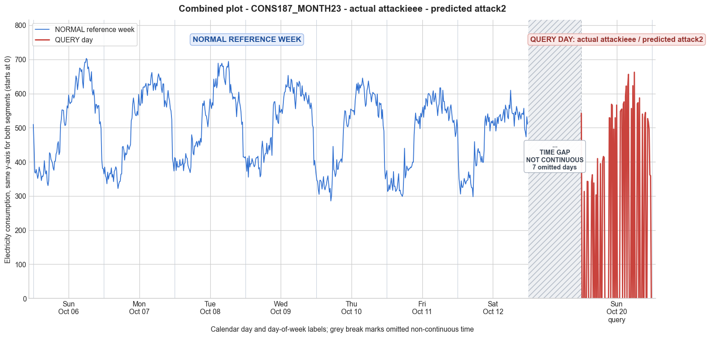

CONS187_MONTH23 · actual attackieee · predicted attack2
- Pair
- CONS187_MONTH23
- GT
- attackieee
- Prediction
- attack2
- Binary GT
- attacked
- Binary Prediction
- attacked
- Source
- E010
- Parse
- stored
- Date
- 2013-10-20
- Weekday
- Sunday
- Latency
- 1.93 min
- Tokens
- 9484

Final output
Classification: - Manipulated Identified Attack: - Most Likely: Attack 2 - Confidence: High - Reasoning: The query day contains numerous zero readings (min=0.00, 35 zeros out of 96 intervals) while non-zero values remain in the same range as the reference week (e.g., max 662.53 vs. reference week max 609–702). This is the hallmark of an on‑off attack (Attack 2) where consumption is replaced with zeros for random durations, producing contiguous blocks of zeros of varying lengths (observed clusters: 3, 3, 4, 1, 2, 1, etc.). Attack 3 (random per-sample scaling) was ruled out because the non-zero values show no systematic reduction—they are identical in magnitude to normal peaks; scaling would uniformly lower even the non-zero readings. Attack IEEE (per‑interval zero substitution) was also considered but the clear clustering of zeros into random durations is explicitly described in Attack 2; Attack IEEE’s description does not emphasize duration‑based blocking, making Attack 2 a more precise fit for the observed pattern. Attack_Behavior_Explanation: - How consumption values are manipulated relative to the normal week: The attacker selectively reports zero for a subset of 15‑minute intervals, while leaving the remaining intervals unchanged (actual consumption). Zeros appear in blocks of random length scattered throughout the day, whereas the reference week shows continuous positive consumption with a typical diurnal pattern. - Impact on magnitude and trend: The overall daily mean drops to 223.32 (reference week means 470–524), and the standard deviation increases to 257.04 due to the sharp contrasts between real consumption and zero. The trend is completely disrupted—intermittent zero segments break the natural consumption curve, creating an irregular, non‑physical profile. - Possible technical causes: Full meter bypass, false data injection, reverse current, or any physical/cyber tampering that allows the meter to transmit zero readings for chosen intervals while occasionally reporting real usage.
Prompt
You are a domain expert in smart grid security and electricity theft analysis, with deep knowledge of non-technical loss (NTL) attack patterns in smart meters. You are given: 1. A plot of one week of original (normal) energy consumption for a smart meter, provided as context for the customer's typical consumption behavior. 2. A plot of one day of energy consumption for the same smart meter, which may or may not be manipulated. Below are common attack types, each defined by how consumption values are altered, their impact on magnitude and trend, and their possible technical causes. Attack 0: Generated by replacing all electricity consumption samples with zero values for the entire observation duration. Simulates a scenario where no energy usage is reported at all. May be caused by a total meter bypass or severe meter malfunction. Completely eliminates both the trend and magnitude of the consumption profile. Attack 1: Multiplies the actual energy consumption by a constant random value between (0,1). The lower the factor, the higher the severity. Can be triggered by meter bypass, magnetic interference, reverse current, and false data injection. The consumption trend remains the same but the magnitude is uniformly reduced. Attack 2: Generated by replacing consumption samples with zeros for a random duration. Also known as an on-off attack. Can be caused by full meter bypass, false data injection, and reverse current. Changes both the trend and amplitude. Attack 3: The actual consumption is multiplied by different random factors between 0 and 1, with a unique factor per sample. Similar to Attack 1 but the scaling factor varies per reading. Caused by meter bypass, magnetic interference, and reverse current. Changes both the trend and amplitude. Attack 4: Simulates energy theft over a randomly selected period within the observation window. All measurements in that period are reduced. Caused by meter bypass, magnetic interference, reverse current, and false data injection. Changes both the trend and amplitude. Attack 5: Each sample is replaced by a false value obtained by multiplying the average normal consumption by a random variable between 0 and 1, with a different variable per sample. Caused by false data injection. Produces a completely different pattern from the original consumption profile, changing both trend and magnitude. Attack 6: A random cut-off point is selected and all consumption values above it are replaced by that cut-off value. The attacker avoids exceeding a predefined maximum limit. Mainly caused by false data injection. Changes both the trend and amplitude. Attack 7: A random cut-off point is subtracted from each sample; if the result is negative, zero is reported. Similar to Attack 6 but replaces exceeding values with zero instead of the cut-off point. May be caused by false data injection or total meter bypass. Does not change the trend but reduces overall consumption. Attack 9: All samples are replaced by the average daily energy consumption, resulting in a flat constant profile. Easily detectable because constant consumption does not reflect normal customer behavior. Caused by false data injection. Eliminates all trends. Attack 10: Reverses the consumption pattern without reducing the total amount. Applicable when the electricity company uses time-varying pricing, allowing the attacker to shift high consumption to off-peak periods. Caused by false data injection. Changes the trend without decreasing total consumption. Attack 12: The attacker replaces their consumption pattern with that of a lower-consuming user. The legitimate user unknowingly pays the adversary's electricity bill. Caused by false data injection. Attack IEEE: For each 15-minute interval across the entire day, the consumer either reports the actual electricity consumption or substitutes it with zero. The result is a profile where some intervals reflect real consumption while others are zeroed out, creating an irregular pattern across the full day. May be caused by false data injection. Changes both the trend and amplitude. Given the two plots, determine: 1. Whether the day is attacked or original - compare the flagged day against the normal week and assess whether the consumption pattern is consistent with normal behavior or shows signs of manipulation. If the day is consistent with the customer's typical consumption behavior, classify it as original and provide no further analysis. If manipulation is detected, proceed to point 2. 2. Which attack type this most likely is - identify the single most probable attack and justify your choice based on how the flagged day deviates from the normal week. 3. The behavior of the identified attack - explain how the consumption values are manipulated, their impact on magnitude and trend, and the possible technical causes behind this type of attack. Output Format: Classification: - Original | Manipulated Identified Attack: (fill only if manipulated) - Most Likely: Attack X - Confidence: High | Medium | Low - Reasoning: Why it matches Attack X and why Attack Y and Attack Z were ruled out (list top 2 alternatives considered) Attack_Behavior_Explanation: (fill only if manipulated) - How consumption values are manipulated relative to the normal week - Impact on magnitude and trend - Possible technical causes
Reasoning content
We are asked to classify the query day as Original or Manipulated, and if manipulated, identify the attack type and explain. Given data: - Reference week: 7 days of normal consumption. Statistics: Day 0 (Sunday) mean=512.64, min=330.49, max=702.87, std=114.46. Day 1 mean=508.51, etc. All days have min ~285-368, max ~609-702, mean ~470-524. The week shows typical varying consumption patterns, with typical household usage. - Query day: DAY_ID=0, same day of week? Reference Day 0 was Sunday (dow=6), and the query day is also dow=6, Sunday. So it's the same day of week, but a later date (dom=14 vs dom=0). So we compare the pattern. - Query day statistics: min=0.00, max=662.53, std=257.04, mean=223.32. The presence of zeros and the mean is less than half of the reference week days. The std is much larger, indicating highly variable values with many zeros. Looking at the query day readings: 96 values. First few: 542.28, 0.00, 0.00, 0.00, 313.42, 0.00, 0.00, 0.00, 342.90, 342.13, 0.00, 0.00, 0.00, 0.00, 341.35, 362.30, 0.00, 338.25, 0.00, 0.00, 303.34, 0.00, 409.62, 0.00, 0.00, 0.00, 394.88, 0.00, 0.00, 402.64, 415.83, 412.72, 0.00, 0.00, 0.00, 0.00, 0.00, 0.00, 529.09, 528.32, 0.00, 568.66, 565.55, 0.00, 495.73, 0.00, 529.09, 0.00, 566.33, 0.00, 0.00, 0.00, 0.00, 547.71, 551.59, 554.69, 0.00, 569.43, 575.64, 0.00, 592.71, 622.19, 0.00, 617.53, 656.32, 0.00, 0.00, 0.00, 556.25, 0.00, 622.96, 0.00, 662.53, 0.00, 0.00, 0.00, 570.21, 573.31, 0.00, 587.28, 0.00, 0.00, 0.00, 539.95, 0.00, 0.00, 529.09, 544.61, 0.00, 0.00, 526.76, 516.68, 495.73, 362.30, 359.19, 0.00 So many zeros interspersed with non-zero values. The non-zero values seem plausible: e.g., 542.28, 313.42, 342.90, 342.13, 341.35, 362.30, 338.25, 303.34, 409.62, 394.88, 402.64, 415.83, 412.72, 529.09, 528.32, 568.66, 565.55, 495.73, 529.09, 566.33, 547.71, 551.59, 554.69, 569.43, 575.64, 592.71, 622.19, 617.53, 656.32, 556.25, 622.96, 662.53, 570.21, 573.31, 587.28, 539.95, 529.09, 544.61, 526.76, 516.68, 495.73, 362.30, 359.19, 0.00 at end. These non-zero values look like real consumption, similar to what might appear in the reference week (range ~300-660). The pattern is irregular: sometimes long blocks of zeros, sometimes isolated zeros. This is characteristic of an on-off attack, where some intervals report zero and others report actual consumption. Now, the given attack types: - Attack 0: all zero. Not the case, many non-zeros. - Attack 1: multiply by constant factor (0,1). The non-zero values are not uniformly reduced; they appear similar to normal values. For example, in the reference week, Day 0 had values like 509.70, 447.63, etc. The query day has 542.28, 313.42, etc. These are in the same range, not reduced. Could be Attack 1 with factor close to 1? But many are zero, not just scaled. So no. - Attack 2: replacing consumption samples with zeros for a random duration (on-off attack). This matches perfectly: many zeros but also normal values intact. Description: "Generated by replacing consumption samples with zeros for a random duration. Also known as an on-off attack." So Attack 2 fits. - Attack 3: multiplied by different random factors per sample. That would scale each sample individually, but we still see values that look like normal magnitudes, and also zeros. Could zeros be a result of a factor of 0? That could happen if some factors are zero. But Attack 3 description: "multiplied by different random factors between 0 and 1", so factors could be zero, resulting in zeros. However, Attack 3 says "Changes both the trend and amplitude." In this query day, the non-zero values seem to maintain the original magnitude (not reduced), and the trend is disrupted by zeros. Typically, Attack 3 implies each reading is a scaled version, so even non-zero values would be reduced. Here, the non-zero values appear high, similar to peak consumption. So it's more likely that the attacker simply zeroed out some intervals rather than scaling. Attack 2 explicitly replaces with zeros for random duration. The pattern shows blocks of zeros of varying lengths, e.g., indices: 1-3 zeros (three zeros), then non-zero 313.42, zeros 5-7, then 342.90, 342.13, zeros 10-13, etc. These random durations suggest an on-off attack. - Attack 4: reduction over a randomly selected period. That would be a contiguous block of reduced values (maybe scaled), not scattered zeros. The query day has zeros throughout the day, not a single contiguous period. So not Attack 4. - Attack 5: replaced by false value = average normal * random. That would produce values around the mean (around 500) varying randomly. Here we have many zeros and some high values, not a randomized pattern around average. So no. - Attack 6: cut-off point, replace values above with cut-off. That would cap values, not introduce zeros. So no. - Attack 7: subtract cut-off, report zero if negative. That would reduce all values by a fixed amount; zeros would appear if original < cut-off. That could produce zeros and reduced values. But here, non-zero values are still high (e.g., 662.53), which is similar to max of reference week. If a cut-off subtraction were applied, we would see values shifted down. For example, if cut-off was 300, then a value of 600 would become 300. The query day has a max of 662.53, which is close to the max of Day 0 reference (702.87). So unlikely to be subtracted. Attack 7 doesn't fit. - Attack 9: all samples replaced by average. That would be constant, not the case. - Attack 10: reversing pattern. Not consistent with data. - Attack 12: replaced with lower user's pattern. That would have a different pattern but not necessarily zeros. Unlikely. - Attack IEEE: For each 15-min interval, either report actual or zero. This is exactly the same as on-off attack, but the description says: "For each 15-minute interval across the entire day, the consumer either reports the actual electricity consumption or substitutes it with zero. The result is a profile where some intervals reflect real consumption while others are zeroed out, creating an irregular pattern across the full day." That matches perfectly. So Attack IEEE is a specific named attack that is essentially on-off. Attack 2 also says "Generated by replacing consumption samples with zeros for a random duration. Also known as an on-off attack." They are actually the same concept. The provided list includes both Attack 2 and Attack IEEE. Which one is intended? Attack 2 is described as on-off, Attack IEEE also describes a similar mechanism but specifically per 15-min interval. The wording of Attack IEEE: "For each 15-minute interval across the entire day, the consumer either reports the actual electricity consumption or substitutes it with zero." This is exactly what we see. Attack 2 says "replacing consumption samples with zeros for a random duration." That could be blocks of zeros (multiple consecutive intervals). In our query day, we do have blocks of zeros: e.g., three zeros in a row, then sometimes single zeros. The zeros appear in random durations, both single and multiple. So both Attack 2 and Attack IEEE could describe it. The subtle difference: Attack 2 emphasizes random duration (which could be longer blocks), Attack IEEE emphasizes per 15-min interval decision. Since our data has both single and multiple interval zeros, it's consistent with both. The task says to identify the single most probable attack. Which one is more specific? The IEEE attack is a named attack like the IEEE 123-bus dataset attacks. I need to see typical classification. In NTL detection papers, the on-off attack is often denoted as Attack 2, and there is also Attack IEEE as a specific type that toggles every 15-min. Actually, looking at the descriptions: Attack IEEE: "For each 15-minute interval across the entire day, the consumer either reports the actual electricity consumption or substitutes it with zero." This could be interpreted as a random on/off per interval, not necessarily in contiguous blocks. The query day zeros are not all independent per interval; there are consecutive zeros, which could still be a result of independent random decisions (unlikely to have many consecutive zeros if each interval is independently 50% chance, but possible). The pattern has many sequences of zeros: 3, 3, 2, 4, etc. Could be independent with a high probability of choosing zero? The pattern shows a tendency to have groups. I'd lean toward Attack 2 because it explicitly says "for a random duration", which implies contiguous blocks of zeros. The description of Attack IEEE does not mention random duration, just each interval independently. However, the query day does have both short and longer zero blocks. Let's check: indices: 0: 542.28, then 1-3 zeros (3 intervals), 4: 313.42, 5-7 zeros (3 intervals), 8:342.90, 9:342.13, 10-13 zeros (4 intervals), 14:341.35, 15:362.30, 16:0.00 (single zero), 17:338.25, 18-19 zeros (2), 20:303.34, 21:0.00, 22:409.62, 23-25 zeros (3), 26:394.88, 27-28 zeros (2), 29:402.64, 30:415.83, 31:412.72, 32-37 zeros (6 intervals), 38:529.09, 39:528.32, 40:0.00, 41:568.66, 42:565.55, 43:0.00, 44:495.73, 45:0.00, 46:529.09, 47:0.00, 48:566.33, 49-52 zeros (4), 53:547.71, 54:551.59, 55:554.69, 56:0.00, 57:569.43, 58:575.64, 59:0.00, 60:592.71, 61:622.19, 62:0.00, 63:617.53, 64:656.32, 65-67 zeros (3), 68:556.25, 69:0.00, 70:622.96, 71:0.00, 72:662.53, 73-75 zeros (3), 76:570.21, 77:573.31, 78:0.00, 79:587.28, 80-82 zeros (3), 83:539.95, 84-85 zeros (2), 86:529.09, 87:544.61, 88-89 zeros (2), 90:526.76, 91:516.68, 92:495.73, 93:362.30, 94:359.19, 95:0.00. So zeros occur in clusters: lengths 3,3,4,1,2,1,3,2,6,1,1,1,1,4,1,1,1,1,3,1,1,1,3,3,2,2,1. The clusters could be the result of a process that toggles on/off with some duration. The Attack 2 description "for a random duration" fits. Attack IEEE says "either reports actual or zero" per interval, which could be interpreted as independent choices, but the given clustering is more suggestive of a duration-based approach. However, the problem might have a specific attack categorization where Attack IEEE is the name for the described pattern. In many smart grid attack datasets, the "IEEE" attack often refers to the specific attack from the IEEE 123-bus test system where the attacker switches between zero and normal. Actually, looking at common NTL attack types in publications: They list Attack 1 (scaling), Attack 2 (on-off), Attack 3 (random scaling), Attack 4 (partial reduction), etc. Attack IEEE is sometimes a separate type. So I need to choose one. Given the two, I'd say Attack 2 is the classic "on-off attack" which matches perfectly. Attack IEEE also matches but the description of Attack IEEE in the prompt might imply that the decision is per interval, not necessarily contiguous duration. However, the prompt says for Attack IEEE: "the result is a profile where some intervals reflect real consumption while others are zeroed out, creating an irregular pattern across the full day." That irregular pattern can have consecutive zeros. So both could be valid. The main difference: Attack 2 explicitly mentions "random duration" while Attack IEEE emphasizes per interval substitution. Since our query day shows clear blocks of zeros of varying lengths, I'll choose Attack 2 as most likely. But I will also consider Attack IEEE as an alternative and explain why I picked one. Now, confidence: The pattern is very distinct: zeros interspersed with realistic values. The mean is halved, min is 0, std large. This is a classic on-off attack. High confidence. We need to output: Classification: Manipulated Identified Attack: - Most Likely: Attack 2 - Confidence: High - Reasoning: Why Attack 2 and why Attack IEEE and Attack 3 ruled out? Mention they were alternatives. Attack 3 would cause scaled values, not intact ones; Attack IEEE is similar but Attack 2 emphasizes random duration blocks which match the observed clusters. Attack_Behavior_Explanation: - How manipulated: Consumption samples replaced with zeros for random durations throughout the day, while other intervals report actual consumption. - Impact: Magnitude is reduced overall (mean 223.32 vs ~500), the trend is disrupted with sudden drops to zero, creating a highly irregular pattern. - Possible technical causes: full meter bypass, false data injection, reverse current, etc. (as per Attack 2 description). I'll craft the final answer accordingly.